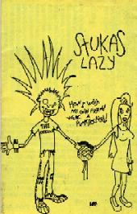

STUKAS LAZY
- 13 músicas (32 min) - |
|||||||||||||||||||||||||||
|  |
|
||||||||||||||||||||||||||
* música bônus exclusiva DDD
características:
| qualidade de gravação | adesivo | letras das músicas |
| excelente | não | sim |
|
|
comentários:
" trio curitibano que toca o bom e velho punk rock clássico: básico e simples. os backing vocals têm presença muito marcante nessa demo, com letras falando de mulheres e cerveja num enfoque bem pessoal. o STUKAS LAZY toca em qualquer lugar que lhes derem espaço e não se preocupa com cachês. seu estilo se caracteriza com a frase "ramones é a melhor banda do mundo". "